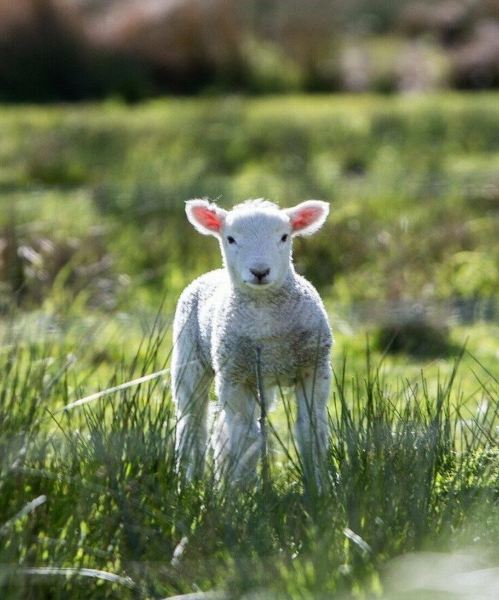
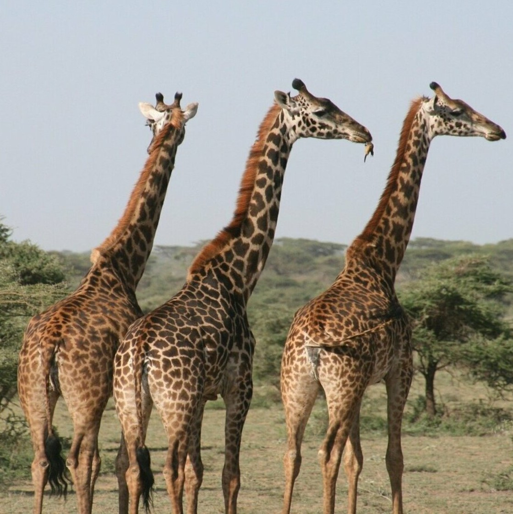
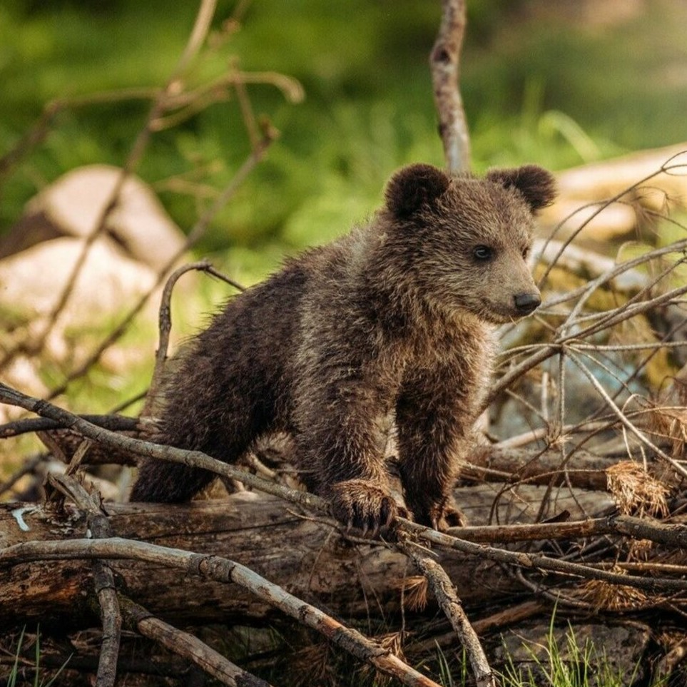

양
당신은 말없이 다정하고 온화하며 사람들에게 친절하고 겸손한 사람이군요
속마음이 매우 따뜻하나 상대방을 잘 알게 될 때까지 이 따뜻함을 잘 드러내지 않습니다.
동정적이며 자기 능력에 대해서 모든 성격 유형 중에서 가장 겸손하고 적응력과 관용성이 많네요.
자신의 의견이나 가치를 타인에게 강요하지 않으며 반대의견이나 충돌을 피하고, 인화를 중시합니다.
하지만 휘둘리지 않고 그만큼 결정력과 추진력이 필요할 것입니다.
당신의 유형은 보편적인 유형으로, 전 세계 인구의 대략 7%가 이 유형에 속해있다고 합니다.



WORST 궁합 메니멀
BEST 궁합 메니멀